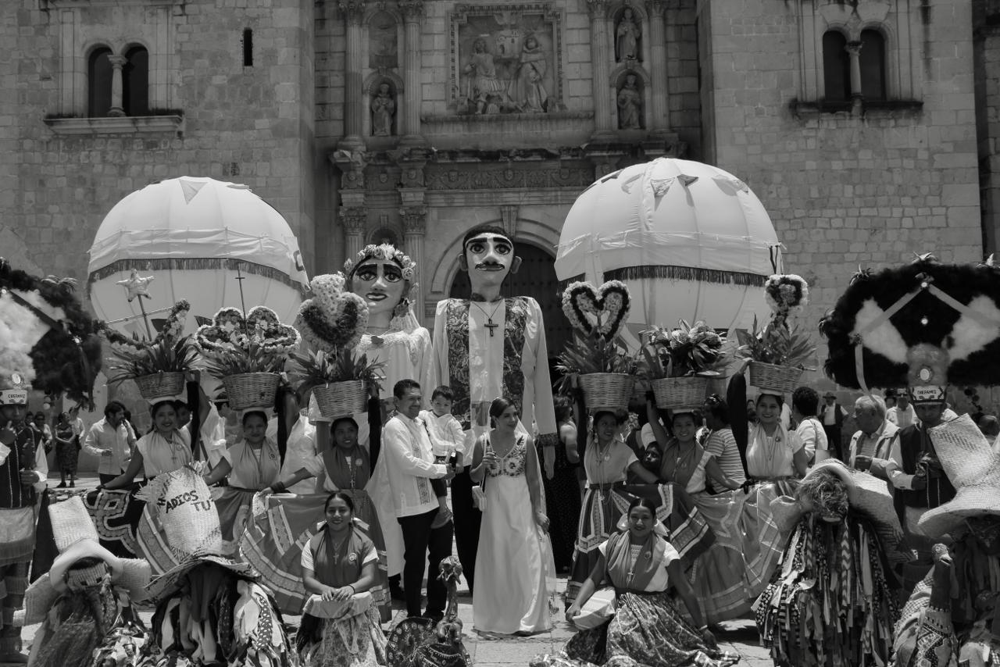
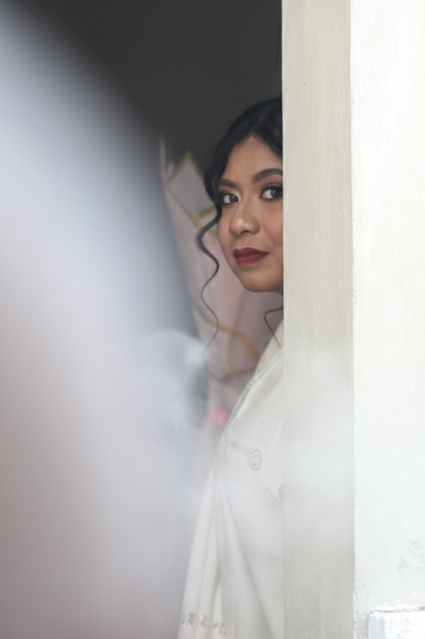
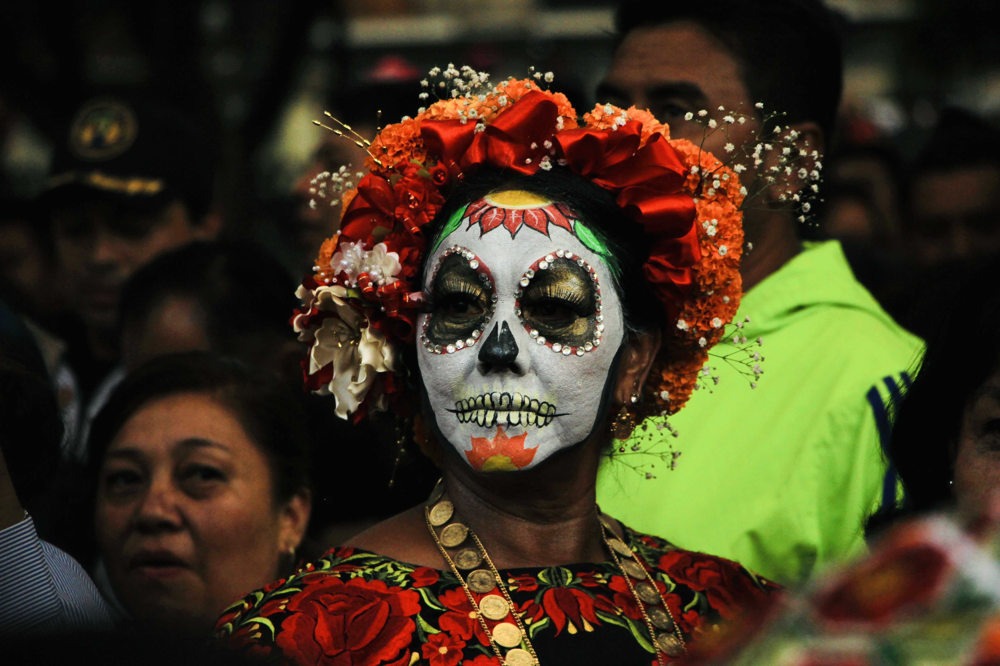
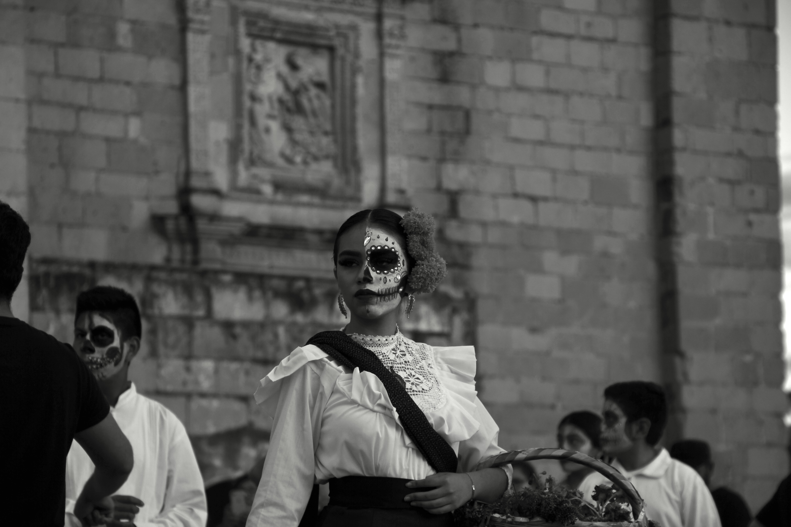

OAXARAW
No busco la foto perfecta, busco la foto honesta
Mi trabajo consiste en desaparecer para que la realidad sea la protagonista

OAXARAW nace como un espacio de encuentro entre la fotografía, el arte visual y la profunda riqueza cultural de Oaxaca. A través de la imagen se exploran tradiciones, identidades y narrativas que dialogan entre lo ancestral y lo contemporáneo.

No creo en la perfección de un estudio, sino en la verdad de un instante que no se repetirá. Mi trabajo no nace de dirigir escenas, sino de saber esperar a que la vida suceda frente a mi lente. Este proyecto nace de la necesidad de observar donde otros suelen desviar la mirada. A través de un proceso de inmersión, estas imágenes documentan la vida cotidiana de costumbres, tradiciones, lugares o comunidades explorando la tensión entre su vulnerabilidad y su inquebrantable resiliencia.
No es solo un registro visual; es una invitación a reconocer nuestra propia humanidad en el otro. Cada fotografía es un fragmento de una historia colectiva que merece ser escuchada, preservada y, sobre todo, respetada.
Creo en el valor de lo espontáneo: una lágrima furtiva, una carcajada estruendosa o el silencio de una tradición familiar. Mi misión es que, en 20 años, no solo recuerdes cómo te veías, sino cómo te sentías.

Aquí buscamos honestidad, crudeza estética y una conexión emocional profunda. Historias sin filtros: la belleza de lo real. Capturo la rutina que mañana será tu tesoro más valioso. Cada imagen aquí es un fragmento de tiempo robado al olvido. Explora estas historias capturadas bajo la luz de la verdad.
